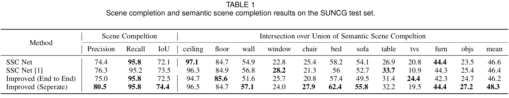

Improvement of 3D Semantic Completion from a Single Depth Image
Jiaxiang Ren Shengjie Zhao

Project Infomation
Project aims at completing the 3D semantic scene from the depth images.
- We introduces a post-processing module to improve the Average Precision (AP) and Intersection-over-union (IoU).
- Because the cost of 3D-CNN is tremendous, we redesign the network to make it fit in the GPU memory(Nvidia).
- The aggregated end-to-end network improves the AP by 6.1% and IoU by 2.3%. [Notes]
Project Requirement
- Softwares: Ubuntu 14.04 TLS, Caffe, Matlab 2016a or above
- Hardwares: NVIDIA GeForce GTX Titan X (12GB), RAM 32GB
Experiment Results
|
 |
Reference
[1] S. Song, F. Yu, A. Zeng, A. X. Chang, M. Savva, and T. Funkhouser, "Semantic scene completion from a single depth image," in Proceedings of 30th IEEE Conference on Computer Vision and Pattern Recognition, 2017.